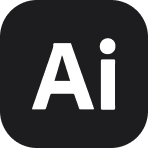
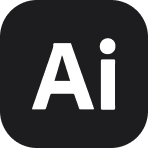

Branding
누구나 도전할 수 있는 채식 PlantiFy
플랜티파이는 채식을 어렵게 느끼는 사람들도 쉽고 즐겁게 시작할 수 있도록 돕는 브랜드입니다. 복잡한 조리법이 아닌, 일상 속에서 자연스럽게 선택할 수 있는 채식 라이프스타일을 제안하며 건강한 라이프스타일의 첫 걸음을 함께하고 가벼운 선택이 만들어내는 긍정적인 변화를 전합니다.


Birth
1997.02.06
Phone
010 4565 9282
geemdy@naver.com
보유역량
 

UIUX DESIGNER
학력사항
2020.02
2015.02
청주대 패션디자인 졸업
대전 청란여고 졸업
교육사항
2025.03 - 2025.09
SBS아카데미컴퓨터아트 대전
AI활용 UIUX 웹퍼블리셔 양성과정 수료
경력사항
2024.04 - 2024.08
2021.03 - 2025.01
빈티지샵 온라인몰 관리자
인테리어 소품 개인 브랜드 운영
자격증
2020.06
운전면허증 2종 보통
Branding
누구나 도전할 수 있는 채식 PlantiFy
플랜티파이는 채식을 어렵게 느끼는 사람들도 쉽고 즐겁게 시작할 수 있도록 돕는 브랜드입니다. 복잡한 조리법이 아닌, 일상 속에서 자연스럽게 선택할 수 있는 채식 라이프스타일을 제안하며 건강한 라이프스타일의 첫 걸음을 함께하고 가벼운 선택이 만들어내는 긍정적인 변화를 전합니다.
Branding
탄소중립 친환경 플랫폼 ecoo
ecoo는 친환경 소비와 순환 문화를 확산시키며, 지속 가능한 미래를 만들어가는 대한민국 대표 친환경 플랫폼입니다.'탄소중립'을 중심 가치로 일상 속 작은 실천이 지구의 변화를 만든다는 믿음을 담고 있습니다.
Web Redesign
반려견 용품 브랜드 Merlot
멀로는 반려견과 함께하는 '움직임의 순간'에서 가장 깊은 영감을 얻은 브랜드입니다. 끊임없이 움직이는 반려견의 열정처럼, 새로운 감성을 전하고자 웹사이트를 리디자인했습니다.

Web Redesign
데님 브랜드 Levi's
리바이스는 시대를 초월한 오리지널 데님 브랜드입니다. 브랜드 헤리티지를 강조하면서도 감성과 스토리를 자연스럽게 경험할 수 있도록 리디자인했습니다.
Web Redesign
생활용품 브랜드 JAJU
자주는 한국인의 라이프스타일을 반영해 전통과 현대를 조화롭게 담아낸 브랜드입니다. 정보 구조를 개선하고 감성을 시각적으로 전달할 수 있도록 리디자인했습니다.
Web Redesign
기초케어 브랜드 Abib
아비브는 피부 본연의 아름다움을 추구하는 스킨케어 브랜드입니다. 미니멀한 아이덴티티 중심으로 웹사이트를 리디자인했습니다.